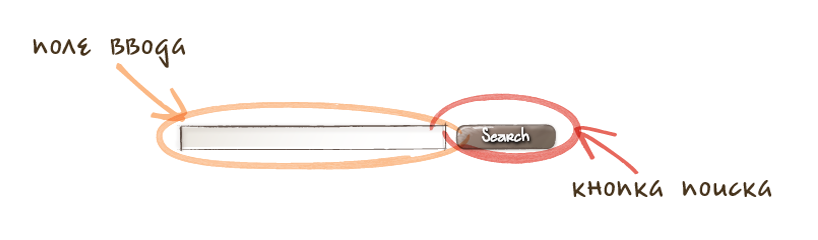

Bulletproof
CSS
Что это?
CSS — средство описания внешнего вида документа.
#rect {
width: 150px;
height: 150px;
background-color: red;
margin: auto;
}
Что не так?
Нет примитивных конструкций
Не выполняется DRY
Трудно поддерживать код
Выход есть!

Препроцессоры
НАИБОЛЕЕ ПОПУЛЯРНЫЕ


Переменные,
вложенность
//LESS
@tone: #170;
div {
color: @tone;
p {
color: lighten(@tone, 20%);
}
}
/* CSS */
div {
color: #170;
}
div p {
color: #20dd00;
}
Примеси
//LESS
.borders(@size: 5px) {
border-radius: @size;
-webkit-border-radius: @size;
}
section {
.borders(5px);
}
/* CSS */
section {
border-radius: 5px;
-webkit-border-radius: 5px;
}
Pattern matching
.mixin (dark; @color) {
color: darken(@color, 10%);
}
.mixin (light; @color) {
color: lighten(@color, 10%);
}
.mixin (@_; @color) {
display: block;
}
Pattern matching
@switch: light;
.class {
.mixin(@switch; #888);
}
.class {
color: #a2a2a2;
display: block;
}
Циклы
// SASS
@each $animal in puma, sea-slug, egret, salamander {
.#{$animal}-icon {
background-image: url('/images/#{$animal}.png');
}
}
/* CSS */
.puma-icon {
background-image: url('/images/puma.png'); }
.sea-slug-icon {
background-image: url('/images/sea-slug.png'); }
.egret-icon {
background-image: url('/images/egret.png'); }
.salamander-icon {
background-image: url('/images/salamander.png'); }
Генерация палитры
@base: #663333;
@complement1: spin(@base, 180);
@complement2: darken(@complement1, 5%);
@lighten1: lighten(@base, 15%);
@lighten2: lighten(@base, 30%);
Однако выдача стилей останется как и прежде раздутой.
Нужно уменьшать размер.*
*Почему?
Workflow
Много подходов

Отличаются в деталях, но принципы общие
- Специальная файловая структура
- Повторное использование блоков
- Наследование а-ля ООП
- Селекторы на теги отсутствуют (никаких div.myclass и .myclass td)
- ID не применяют
К примеру, БЭМ
К примеру, БЭМ
<!-- XML -->
<block name="search-field">
<elem name="query"/>
<elem name="request" src="img/search.png">
</elem>
</block>
...
К примеру, БЭМ
Файловая структура:
blocks/
|_search-field/
|_query/
|_request/
blocks/
|_search-field/
|_query/
|_request/
Помимо, у БЭМ уже есть готовый инструментарий
(шаблонизатор,
сборщик)
Практики
Эксперименты
Увидел крутой CSS, попробуй реализовать не глядя в код.
Инструментарий
Plain editor |
Emmet / Hayaku |
Links
- Rework — DIY препроцессоры (от автора Stylus)
- inuit.css Powerful, scalable, Sass-based, BEM, OOCSS framework.
- @stubbornella об OOCSS
- Больше экспериментов
http://bit.ly/sdev-css